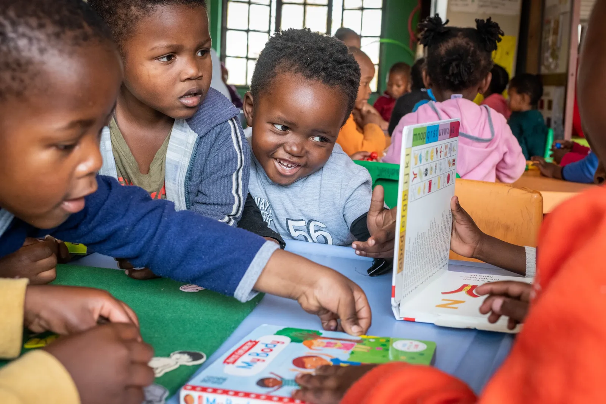
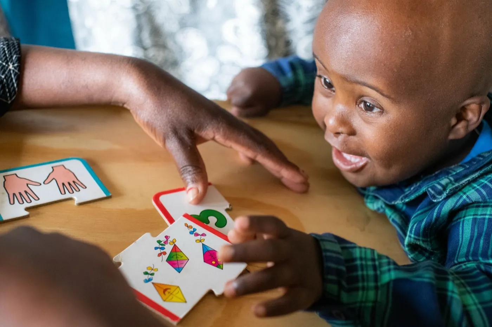
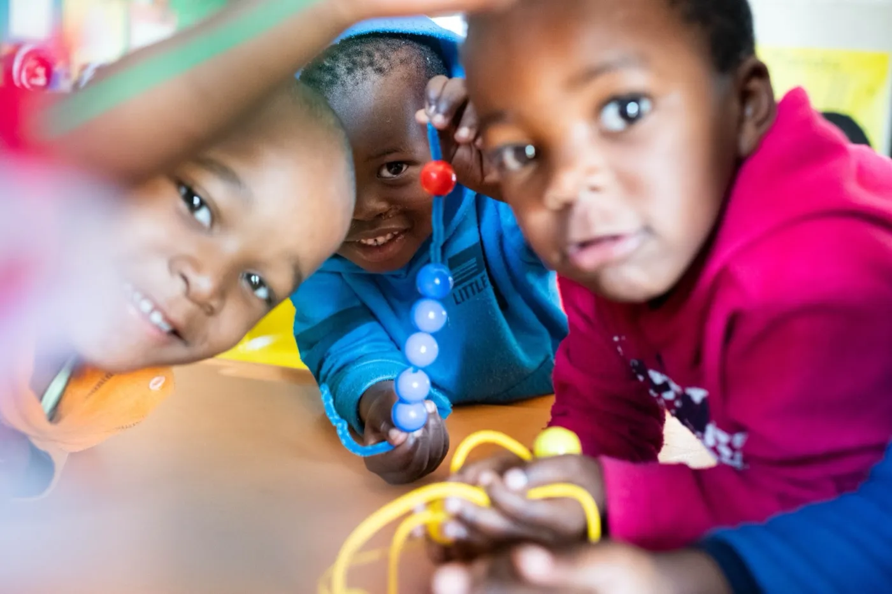
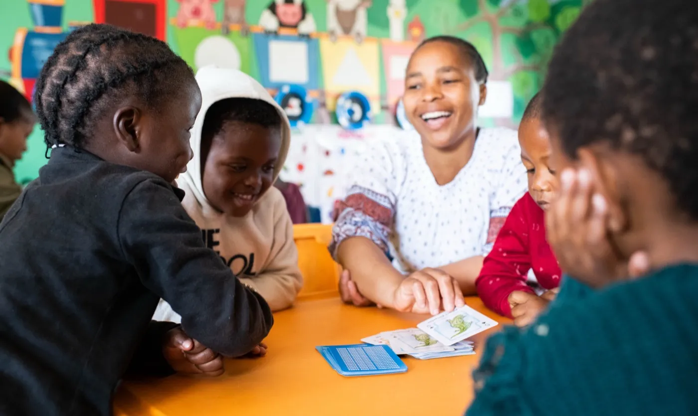
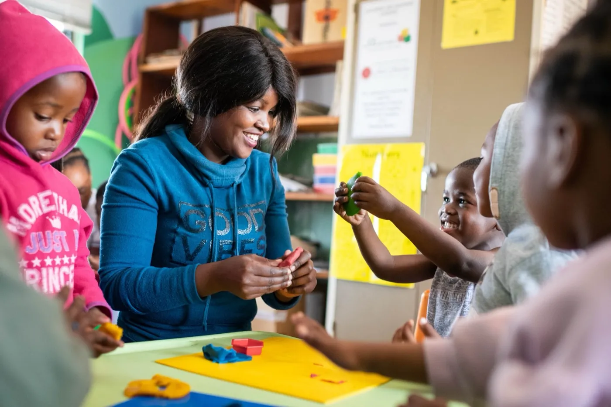
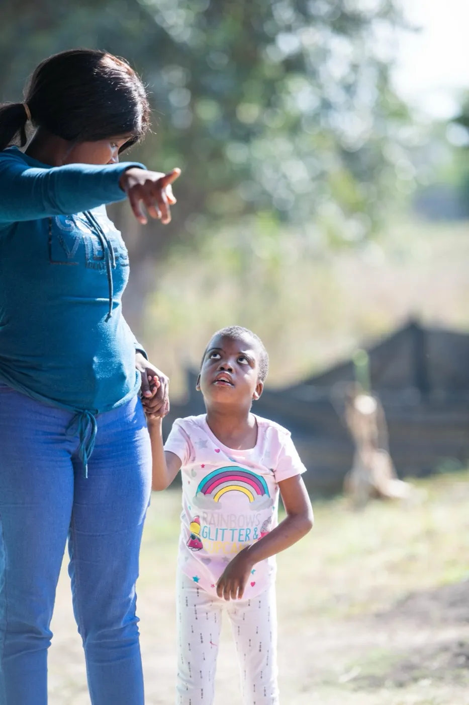
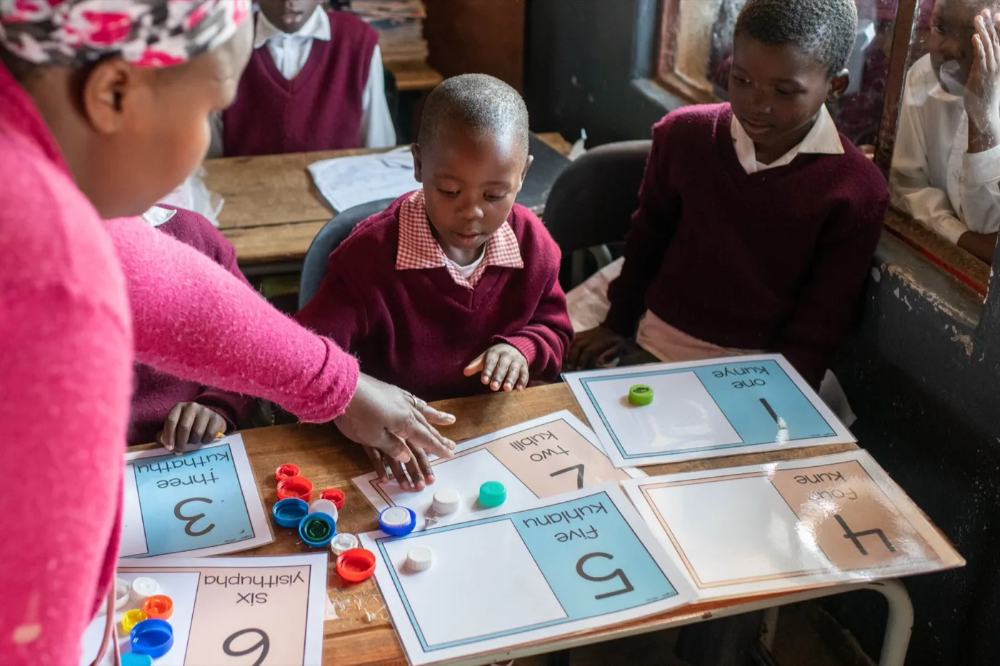

01
Inclusion Support
Home-based learning interventions and inclusive classroom support for children with disabilities.

Together we can: inclusive education and early intervention for children with disabilities in rural KwaZulu-Natal.
About this partner
Siyakwazi is a community-based organisation supporting children with disabilities and barriers to learning under age 7 in rural KwaZulu-Natal communities.
The organisation advocates for the rights of children with disabilities, operating from the Siyakwazi Resource Centre established in 2018. Their work focuses on helping children reach their full potential through inclusive education and early intervention programs.
More than half a million children with disabilities are currently out of school in South Africa. Siyakwazi's model (early identification, therapy, and family-based learning support) is built for the rural setting where specialist services rarely reach.






Their work
01
Home-based learning interventions and inclusive classroom support for children with disabilities.
02
Termly therapy support through occupational therapy, physiotherapy, and speech & language therapy.
03
Red Flag Screening & Catch-up Programme in pre-Grade R to Grade 1: early identification of children with learning barriers.
04
Critical learning support in the first 1,000 days, working with parents and babies to support development in their homes.
Integrated
From a first-1,000-days home visit to a Grade 1 classroom, Siyakwazi follows the child, building the support a rural disability journey almost never receives.
Even Ground's role
We have supported Siyakwazi since 2018 because rural disability services need patient, multi-year capital to build the home-visit network, the therapy roster, and the early-screening relationships that make a measurable difference. We provide unrestricted funding, share knowledge across our partner network, and amplify their advocacy work to a US donor community.
A story from Siyakwazi
Nosipho Gasa is a dedicated disability justice advocate and area manager with Siyakwazi, determined to transform perspectives on disability in her community. Growing up in Mzimhlophe, Nosipho's journey led her back home to work first as a volunteer for children with disabilities. Through working closely with young children with disabilities and their families, Nosipho has become a fierce and committed leader and advocate for children with disabilities in her own community and beyond.
Support Even Ground
Donations are made to Even Ground and help fund community-led programs like Siyakwazi's across South Africa. Even Ground is a US 501(c)(3); contributions are tax-deductible.
A full year of occupational and physical therapy for a rural child with disabilities.
Give $500Red Flag screening across an additional pre-Grade R cohort: early identification for families that would otherwise have no specialist services.
Give $1,000Explore the network
Stay connected
Quarterly updates from Even Ground and our partner network. No spam, just stories and progress.